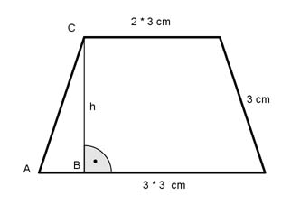

Aufgabe 97 Von einem gleichschenkligen Trapez sei die eine parallele Seite zweimal und die andere dreimal so groß wie der Schenkel mit 3 cm. Wie groß ist der Umfang U und die Fläche A des Trapezes?  U = 2 * 3 cm + 2 * 3 cm + 3 * 3 cm U = 6 cm + 6 cm + 9 cm U = 21 cm Satz von Pythagoras im Dreieck ABC: 9 cm – 6 cm 32 = h2 + (--------------)2 2 9 = h2 + 2,25 |-2,25 h2 = 6,75 |√ h = 2,6 cm 9 cm + 6 cm A = --------------- * 2,6 cm = 19,5 cm2 2